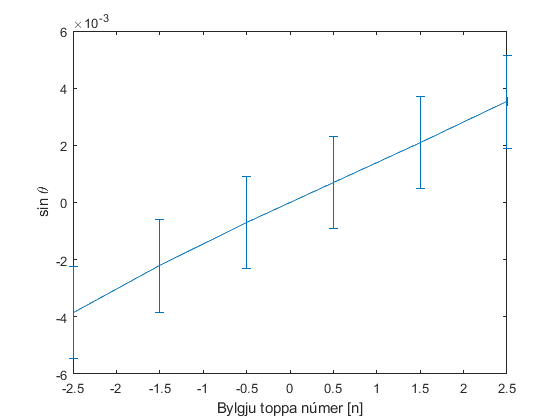

EÐL207G
Contents
pure data
u = symunit;
nm = double(separateUnits(unitConvert(u.nm, u.m)));
cm = double(separateUnits(unitConvert(u.cm, u.m)));
mm = double(separateUnits(unitConvert(u.mm, u.m)));
uA = double(separateUnits(unitConvert(u.uA, u.A)));
rulercmW = 705; % 8cm -29cm = 21cm
pix2mm = rulercmW/2100*mm;
tilraun 1
findMidl1 = @(p) p(ceil(end/2)); cntr1pix2mm = @(p) (p-findMidl1(p))*pix2mm; tilraun1 = [62 255 374 490 682]; tilraun1 = cntr1pix2mm(tilraun1) err = (1*mm + pix2mm)*ones(1,5);
tilraun1 =
Columns 1 through 3
-104.742857142857e-003 -39.9500000000000e-003 0.00000000000000e+000
Columns 4 through 5
38.9428571428571e-003 103.400000000000e-003
tilraun 2
findMidl2 = @(p) (p(end/2)+p(end/2+1))/2; cntr2pix2mm = @(p) (p-findMidl2(p))*pix2mm; tilraun2_025 = [266 293 320 346 376 400 427 454]; tilraun2_025 = cntr2pix2mm(tilraun2_025)
tilraun2_025 =
Columns 1 through 3
-31.8928571428571e-003 -22.8285714285714e-003 -13.7642857142857e-003
Columns 4 through 6
-5.03571428571429e-003 5.03571428571429e-003 13.0928571428571e-003
Columns 7 through 8
22.1571428571429e-003 31.2214285714286e-003
tilraun2_05 = [327 342 356 369 382 395]; tilraun2_05 = cntr2pix2mm(tilraun2_05)
tilraun2_05 =
Columns 1 through 3
-11.9178571428571e-003 -6.88214285714286e-003 -2.18214285714286e-003
Columns 4 through 6
2.18214285714286e-003 6.54642857142857e-003 10.9107142857143e-003
trash
tilraun2_075 = [235 279 326 406 448 493]; tilraun2_075 = cntr2pix2mm(tilraun2_075)
tilraun2_075 =
Columns 1 through 3
-43.9785714285714e-003 -29.2071428571429e-003 -13.4285714285714e-003
Columns 4 through 6
13.4285714285714e-003 27.5285714285714e-003 42.6357142857143e-003
tilraun2_1 = [172 221 270 371 421 468];
tilraun2_1 = cntr2pix2mm(tilraun2_1)
tilraun2 = {tilraun2_025', tilraun2_05' , tilraun2_075' , tilraun2_1'}
tilraun2_1 =
Columns 1 through 3
-49.8535714285714e-003 -33.4035714285714e-003 -16.9535714285714e-003
Columns 4 through 6
16.9535714285714e-003 33.7392857142857e-003 49.5178571428571e-003
tilraun2 =
1x4 cell array
{8x1 double} {6x1 double} {6x1 double} {6x1 double}
tilraun 3
tilraun3 = [59 159 259 456 553 648]; tilraun3 = cntr2pix2mm(tilraun3)
tilraun3 =
Columns 1 through 3
-100.210714285714e-003 -66.6392857142857e-003 -33.0678571428571e-003
Columns 4 through 6
33.0678571428571e-003 65.6321428571429e-003 97.5250000000000e-003
tilraun 4
degMarker = 0:10:180; tilraun4 = [109.08 78.6 50.15 26.72 10.38 3.16 5.4 17.79 38.97 64.81 95.38 121.48 164.36 164.14 171 169.45 157.37 138.72 112.17]*uA;
Tilraun 1 útreikningar
L = 9*cm; Lerr = 0.1*cm; d = 1880*nm; n = -2:2; % skrifað % x_n = [ 9.1 3.55 0 -3.5 -9.3 ]*cm; % x_nerr = 0.05*cm; % pixle mælt- slopeError = @(z,w,zerr,werr) -polyfit([z(1)-zerr(1) z(end)+zerr(end)],[w(1)+werr(1) w(end)-werr(end)],1) + polyfit([z(1)+zerr(1) z(end)-zerr(end)],[w(1)-werr(1) w(end)+werr(end)],1); sin_thFind = @(x,l) x.*(l^2 +x.^2).^-0.5; sin_therrFind = @(x,l,xerr,lerr) l*(l^2*lerr^2+x.^2.*xerr.^2).^0.5.*(x.^2+l^2).^-1.5; sin_th = sin_thFind(tilraun1,L) sin_therr = sin_therrFind(tilraun1,L,err,Lerr) figure errorbar(-2:2, sin_th,sin_therr,sin_therr,zeros(1,5),zeros(1,5)) xlabel("Bylgju toppa númer [n]") ylabel('sin \theta') b = abs([sin_th(1)-sin_th(5) sin_th(2)-sin_th(4)]) c = [4 2 ]; berr = [(sin_therr(1)^2+sin_therr(5)^2)^0.5 (sin_therr(2)^2+sin_therr(4)^2)^0.5]; hrough = d*b./c hrougherr = d./c.*berr htrue = polyfit(n, d*sin_th, 1); htrue = htrue(1) htrueerr = slopeError(n,d*sin_th,zeros(1,5), d*sin_therr) lambda = d.*sin_th./n lambdaerr = d./n.*sin_therr
sin_th =
Columns 1 through 3
-758.467419877006e-003 -405.714401757031e-003 0.00000000000000e+000
Columns 4 through 5
397.116792491347e-003 754.291339383777e-003
sin_therr =
Columns 1 through 3
5.68479415056302e-003 9.86303365242739e-003 11.1111111111111e-003
Columns 4 through 5
9.92066249720475e-003 5.75949389548982e-003
b =
1.51275875926078e+000 802.831194248377e-003
hrough =
710.996616852568e-009 754.661322593475e-009
hrougherr =
3.80347785212968e-009 13.1498903518182e-009
htrue =
719.729558000750e-009
htrueerr =
10.7576307632898e-009 140.435520462133e-012
lambda =
Columns 1 through 3
712.959374684386e-009 762.743075303218e-009 NaN
Columns 4 through 5
746.579569883732e-009 709.033859020751e-009
lambdaerr =
Columns 1 through 3
-5.34370650152924e-009 -18.5425032665635e-009 Inf
Columns 4 through 5
18.6508454947449e-009 5.41392426176043e-009
hrough er best
lambda = hrough(1); lambdaerr = hrougherr(1);
Tilraun 2 útreikningar
L = 310*cm; Lerr = 0.5*cm; drough = zeros(1,4); drougherr = zeros(1,4); c = [8 6 6 6] for index = 1:4 sin_k = sin_thFind(tilraun2{index},L) sin_kerr = sin_therrFind(tilraun2{index}, L,(1*mm + pix2mm)*ones(length(tilraun2{index}),1),Lerr) b = sin_k(end) - sin_k(1) berr = (sin_kerr(1)^2+sin_kerr(end)^2)^0.5 drough(index) = lambda/(b/c(index)); drougherr = drough*(berr/b); end sinerrr = sin_therrFind(tilraun2{1}, L,(1*mm + pix2mm)*ones(length(tilraun2{1}),1),Lerr); figure errorbar(-3.5:3.5,sin_thFind(tilraun2{1},L),sinerrr,sinerrr,zeros(1,8),zeros(1,8)) xlabel("Bylgju toppa númer [n]") ylabel('sin \theta') sinerrr = sin_therrFind(tilraun2{2}, L,(1*mm + pix2mm)*ones(length(tilraun2{2}),1),Lerr); figure errorbar(-2.5:2.5,sin_thFind(tilraun2{2},L),sinerrr,sinerrr,zeros(1,6),zeros(1,6)) xlabel("Bylgju toppa númer [n]") ylabel('sin \theta') drough drougherr
c =
Columns 1 through 3
8.00000000000000e+000 6.00000000000000e+000 6.00000000000000e+000
Column 4
6.00000000000000e+000
sin_k =
-10.2874740173660e-003
-7.36385563383941e-003
-4.44004839962830e-003
-1.62442181991091e-003
1.62442181991091e-003
4.22346463529410e-003
7.14728287613613e-003
10.0709178192853e-003
sin_kerr =
1.61265327771236e-003
1.61277515553937e-003
1.61285666539155e-003
1.61289699361383e-003
1.61289699361383e-003
1.61286109698057e-003
1.61278257782556e-003
1.61266368974903e-003
b =
20.3583918366513e-003
berr =
2.28064349917986e-003
sin_k =
-3.84444163586047e-003
-2.22004061210485e-003
-703.916876296136e-006
703.916876296136e-006
2.11174644341982e-003
3.51956345426215e-003
sin_kerr =
1.61286831913012e-003
1.61289158548871e-003
1.61290205553605e-003
1.61290205553605e-003
1.61289269342477e-003
1.61287396947908e-003
b =
7.36400509012263e-003
berr =
2.28094424663928e-003
sin_k =
-14.1852085544442e-003
-9.42124084471140e-003
-4.33175659366125e-003
4.33175659366125e-003
8.87983421716450e-003
13.7521556206124e-003
sin_kerr =
1.61242800692225e-003
1.61269359729782e-003
1.61285890888090e-003
1.61285890888090e-003
1.61271699784238e-003
1.61245657813359e-003
b =
27.9373641750566e-003
berr =
2.28033775872644e-003
sin_k =
-16.0797180673159e-003
-10.7747201242788e-003
-5.46881222701791e-003
5.46881222701791e-003
10.8829960068817e-003
15.9714648523087e-003
sin_kerr =
1.61229260297919e-003
1.61262904109315e-003
1.61283258976068e-003
1.61283258976068e-003
1.61262350296366e-003
1.61230079656610e-003
b =
32.0511829196246e-003
berr =
2.28013185939522e-003
drough =
Columns 1 through 3
279.392055151452e-006 579.301568766891e-006 152.698002373617e-006
Column 4
133.098978337657e-006
drougherr =
Columns 1 through 3
19.8760441326075e-006 41.2117071140690e-006 10.8629868966524e-006
Column 4
9.46870577980532e-006
 tilraun 3 útreikningar
sin_th = sin_thFind(tilraun3,L); sin_therr = sin_therrFind(tilraun3,L,(1*mm + pix2mm)*ones(1,length(tilraun3)),Lerr); b = sin_th(end)-sin_th(1) berr = (sin_therr(1)^2+sin_therr(end)^2)^0.5 droughhar = lambda/(b/6) droughharerr = droughhar*(berr/b) figure errorbar(-2.5:2.5,sin_th,sin_therr,sin_therr,zeros(1,6),zeros(1,6)) xlabel("Bylgju toppa númer [n]") ylabel('sin \theta')
b =
63.7532811461383e-003
berr =
2.27759589879529e-003
droughhar =
66.9138846569595e-006
droughharerr =
2.39050895149706e-006
tilraun 4 útreikningar
tilraun4err = tilraun4.*0.05; degMarkererr = 5*ones(1, length(degMarker)); figure errorbar(degMarker, tilraun4, tilraun4err,tilraun4err, degMarkererr,degMarkererr); hold on; plot(0:180,max(tilraun4)*cos(pi/180.*((0:180)+40)).^2); hold off; xlabel("Skautunar hliðrun [Gráður]") ylabel("Styrkur [Amper]") axis([-6 186 0 1.8e-4])